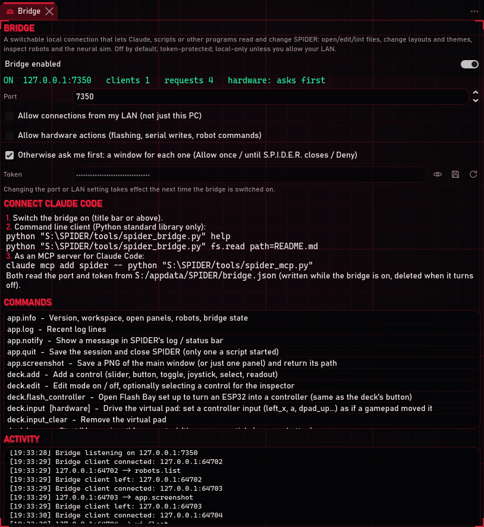
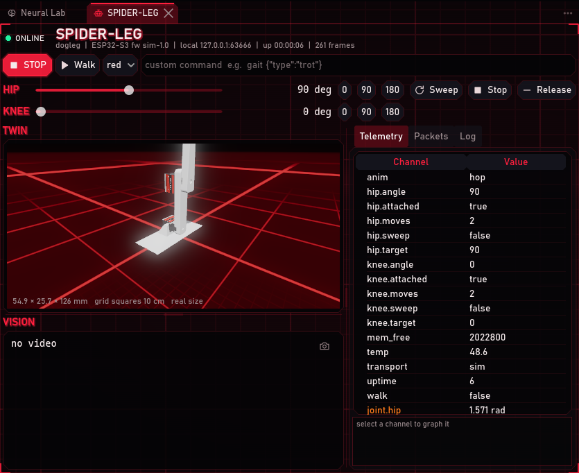
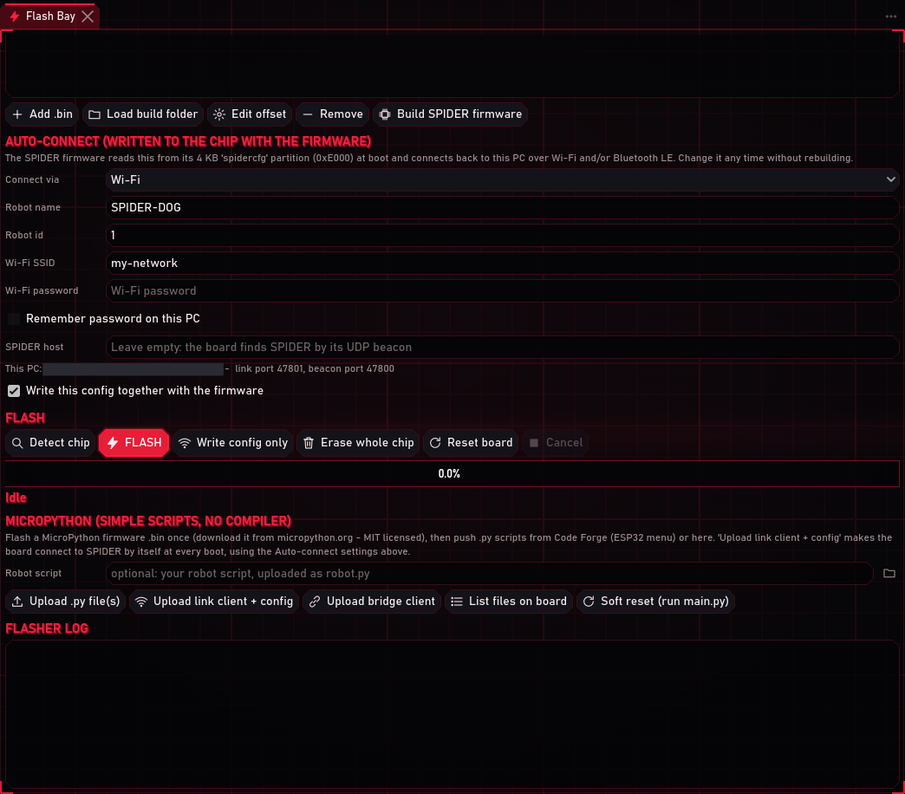

The bridge is S.P.I.D.E.R.'s own control connection. When it is on, Claude Code (or a script, or an ESP32 on your Wi-Fi) can work in the S.P.I.D.E.R. you have open: read your robots, open and edit files, change layouts, and, when you allow it, flash boards and move robots. You watch everything happen in your own window, and nothing that touches hardware happens without your answer.
The bridge is off in every new install and download. You switch it on yourself, once; it then stays on until you switch it off.
Every screenshot below was taken on 2026-10-13 in a separate test copy of S.P.I.D.E.R. with its own settings, so no real folder, network address or token shows in them. Network addresses are blacked out.
| You will do | Time |
|---|---|
| Switch the bridge on | 10 s |
| Connect Claude Code | 1 min |
| Answer Claude's first hardware request | a click |
1. What the bridge can and cannot do
- It only listens to this PC. Other computers cannot reach it unless you tick Allow connections from my LAN (only needed for an ESP32 that uses the bridge, step 6).
- It needs the token, a long random password S.P.I.D.E.R. makes for you. Programs on this PC read it from
bridge.jsonin S.P.I.D.E.R.'s settings folder while the bridge is on; the file is deleted when it turns off. - Hardware asks first. Flashing, uploading to a board, the serial port and robot commands make S.P.I.D.E.R. show a window and wait for your answer (step 4).
- It never closes your S.P.I.D.E.R. Only a copy that a script started can be closed through the bridge.
- Everything else is allowed while it is on: reading and editing files in your workspace, layouts, themes, the Control Deck's setup, the neural sim, screenshots. Switch it off when you are not using it.
2. Switch it on
Press BRIDGE in the title bar (or TOOLS > Turn bridge ON). It turns green and shows how many programs are connected:
HELP > Bridge / Claude setup opens the Bridge panel with the details:

| Setting | Leave it | What it does |
|---|---|---|
| Bridge enabled | on | The same switch as the title bar. Remembered. |
| Port | 7350 | The port the bridge listens on. |
| Allow connections from my LAN | off | Lets other devices on your network in (step 6). |
| Allow hardware actions | off | Hardware actions without asking. Leave it off to be asked each time. |
| Otherwise ask me first | on | The window from step 4. Off: hardware actions are simply refused. |
| Token | hidden | Keep it secret. The eye shows it, the next button copies it, the last one makes a new one (connected programs then need to reconnect). |
The status line says what the bridge is doing: here ON 127.0.0.1:7350, one program connected, and
hardware: asks first. Activity lists every request as it comes in.
3. Connect Claude Code
The Bridge panel's Connect Claude Code section shows both ways with your own folder filled in. In a terminal:
claude mcp add spider -- python "<S.P.I.D.E.R. folder>/tools/spider_mcp.py"
Claude Code then has S.P.I.D.E.R.'s commands as tools, and you can just ask, for example "open the dog leg's robot screen and make it hop". Without MCP, the command-line client does the same one command at a time (Python standard library only):
python tools/spider_bridge.py app.info
python tools/spider_bridge.py robots.list
help lists every command; the Bridge panel's Commands list marks the ones that touch hardware. If S.P.I.D.E.R.
is closed or its bridge is off, the client says so instead of starting anything.
4. When Claude wants to touch hardware
A hardware command opens this window in S.P.I.D.E.R., saying exactly what is wanted:

| Button | What happens |
|---|---|
| Allow once | This one command runs. The next one asks again. |
| Allow until S.P.I.D.E.R. closes | This one runs, and so does every hardware command after it until you close S.P.I.D.E.R. (or untick it in the Bridge panel). Handy while you work on a robot together. |
| Deny | It does not run, and Claude is told you said no. |
Deny has the focus, so a stray Enter or Space while you type elsewhere never allows anything. If nobody answers within 90 seconds, the window closes by itself and counts as Deny. The Console logs every question.
5. Example: let Claude make the robot dog leg hop
The robot dog leg has a hop animation: it waits folded at home, then snaps the whole leg straight up as fast as the servos go. With the leg connected, Claude (or you, from a terminal) sends:
python tools/spider_bridge.py robots.send name=SPIDER-LEG cmd=hop
S.P.I.D.E.R. asks first (the window above). After Allow once, the leg hops, and its robot screen and 3D twin show it at the top of the hop:

6. ESP32 boards and the bridge
Claude works with your ESP32 through S.P.I.D.E.R.
Everything Flash Bay does is a bridge command, so Claude can set up a board for you while you watch, and each step that touches the board asks first:
| Command | Does |
|---|---|
flashbay.set board=yd-esp32-s3 port=COM6 |
Fills in Flash Bay (no question: nothing touches the board yet) |
flashbay.run job=detect |
Detects the chip |
flashbay.run job=flash |
Flashes the firmware images in Flash Bay |
flashbay.run job=micropython |
Uploads the link client and the robot script, like Upload link client + config |
serial.monitor port=COM6 |
Opens the board in the Serial Monitor |
link.ble on=true |
Switches Bluetooth LE auto-connect on |
The tutorials Flash an ESP32-S3 and Robot dog leg show what each step does.
An ESP32 that uses the bridge itself
A board can also be a bridge client: a remote with a button, for example. It joins your Wi-Fi, finds the PC
running S.P.I.D.E.R. by its discovery beacon, and sends bridge commands with the token. The example
bridge_button.py makes the dog leg hop when you press the
board's BOOT button.
- In the Bridge panel, tick Allow connections from my LAN, then switch the bridge off and on. Windows may ask whether S.P.I.D.E.R. may use the network: allow Private networks only. Do this only on your own home network.
- In Link Hub, keep Discovery beacon on (or type the PC's address into SPIDER host in Flash Bay).
- In Flash Bay, the board needs MicroPython (see Flash MicroPython). In AUTO-CONNECT, type your Wi-Fi SSID and Wi-Fi password.
- Press Upload bridge client (in MICROPYTHON) and pick
firmware/micropython/examples/bridge_button.py. S.P.I.D.E.R. uploads the client (spider_bridge_mpy.py), writesbridge_config.jsonwith your Wi-Fi and the bridge's port and token (you never type the token), and puts the script on asmain.py. It also tells you anything still to switch on.

The board restarts, joins the Wi-Fi and connects; the Serial Monitor shows its [bridge] lines. Press BOOT:
S.P.I.D.E.R. asks once (answer Allow until S.P.I.D.E.R. closes to use the button freely), and the leg hops.
To make the button do something else, change ACTION at the top of the script to any bridge command, for example
("layout.apply", {"name": "Robot Ops"}), and upload it again. In your own MicroPython code:
import spider_bridge_mpy as sb
cfg = sb.load_config()
sb.wifi(cfg["ssid"], cfg["pass"])
bridge = sb.Bridge(sb.find_spider(), cfg["token"], cfg["port"])
print(bridge.call("robots.list"))
bridge.call("robots.send", name="SPIDER-LEG", cmd="hop")
Keep the board safe. It stores your Wi-Fi password and the bridge token. Anyone who has it can read them over USB, so look after it like a key. If it is lost, press New token in the Bridge panel (then upload the bridge client again to your other boards). Untick Allow connections from my LAN when you do not use it.
Tested so far (2026-10-13): the client and its protocol, run on the PC against S.P.I.D.E.R.'s real bridge and discovery beacon (
Test_MicroPython_BridgeClient): it finds the PC, gets in with the token and not without, and a hardware command waits for the answer. It has not yet run on a board over Wi-Fi.
ESP32 boards connect to S.P.I.D.E.R. in two more ways that do not need the bridge: as a robot (Wi-Fi, Bluetooth LE or USB, see Flash an ESP32-S3) and as a controller for the Control Deck (see Control Deck and controllers).
7. Switch it off
Press BRIDGE in the title bar again (or TOOLS > Turn bridge OFF). Connected programs are dropped,
bridge.json is deleted, and it stays off the next time you start S.P.I.D.E.R.
Troubleshooting
| Symptom | Fix |
|---|---|
| "S.P.I.D.E.R. is closed, or its bridge is off" | Open S.P.I.D.E.R. and switch BRIDGE on. |
| "bridge.json is left over" | S.P.I.D.E.R. did not close cleanly last time. Open it again; the bridge switches itself back on. |
| "nobody answered ... so it did not run" | The question window waited 90 s. Send the command again and answer it. |
| "denied in S.P.I.D.E.R." | Someone pressed Deny. |
| "touches hardware and is blocked" | Otherwise ask me first is off in the Bridge panel: tick it (or Allow hardware actions). |
| Claude Code does not see S.P.I.D.E.R.'s tools | Run the claude mcp add line from the Bridge panel again and restart Claude Code. |
| The ESP32 prints "no S.P.I.D.E.R. beacon" | The board and the PC must be on the same network, Discovery beacon on in Link Hub, and Windows must let S.P.I.D.E.R. use Private networks. Or put the PC's address in SPIDER host and upload again. |
| The ESP32 prints "Unauthorised" | The token changed. Press Upload bridge client again. |
| The ESP32 cannot connect at all | Allow connections from my LAN must be on, and the bridge switched off and on after ticking it. |